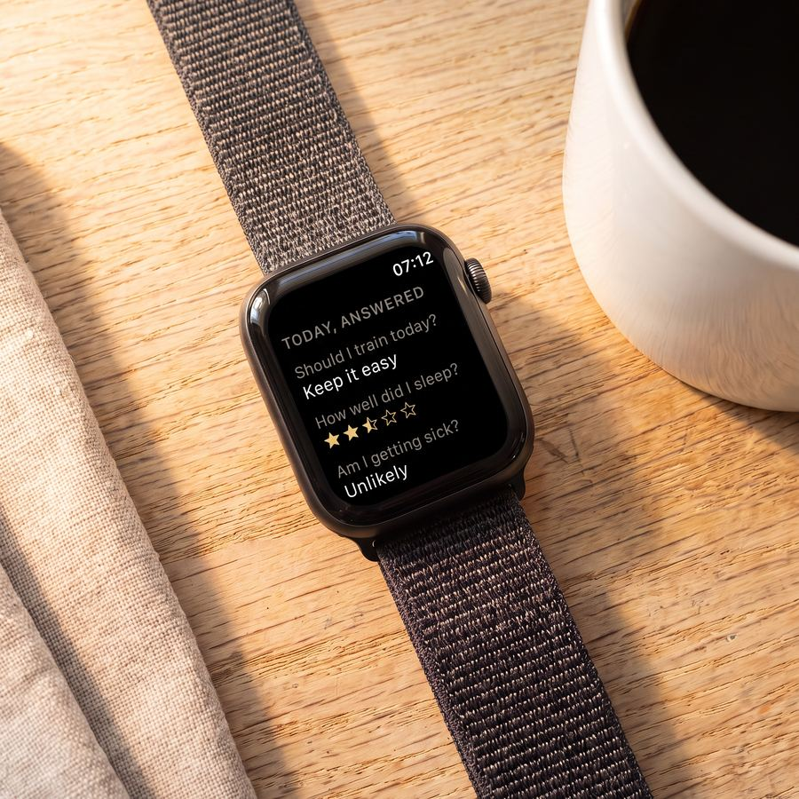
Clear answers every morning
Should I train today? How well did I sleep? Am I getting sick? Seven questions, answered before you get out of bed. No charts to read first.
One clear message every morning: rest or push.
Your watch tracks your workouts, Woah explains them.
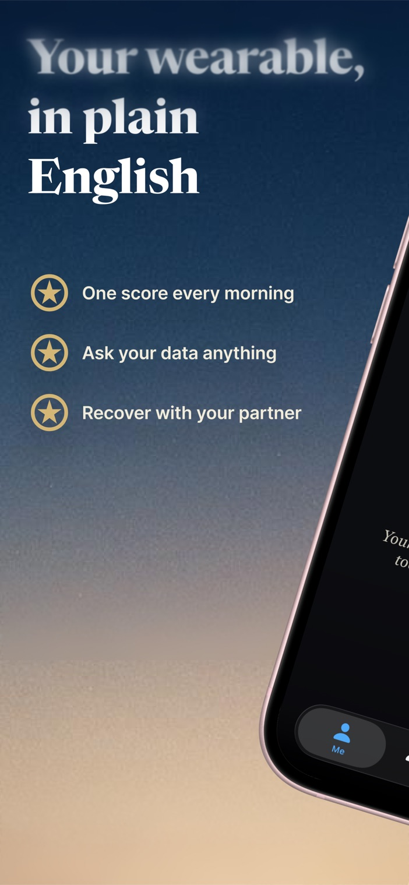
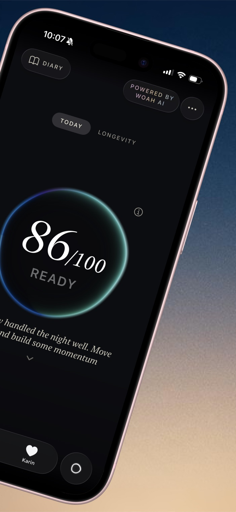
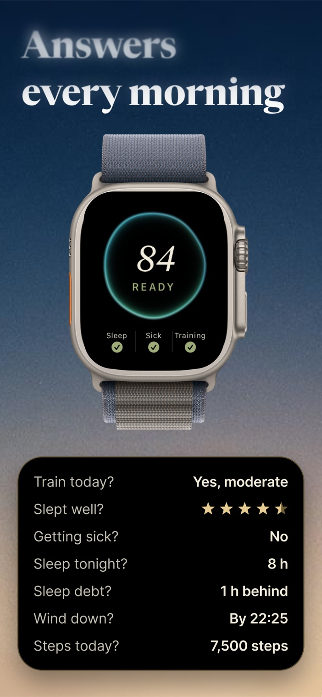
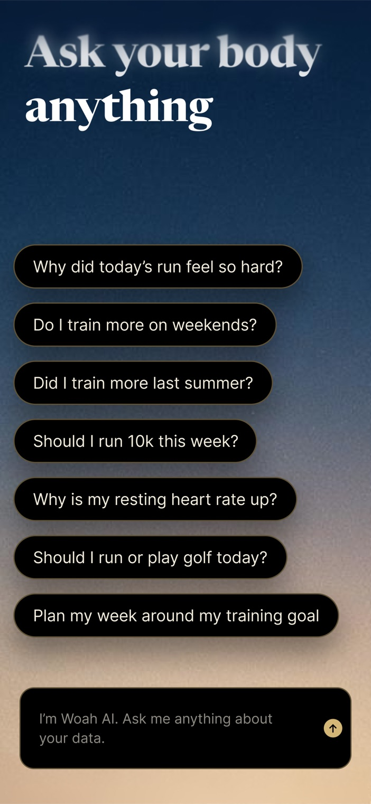
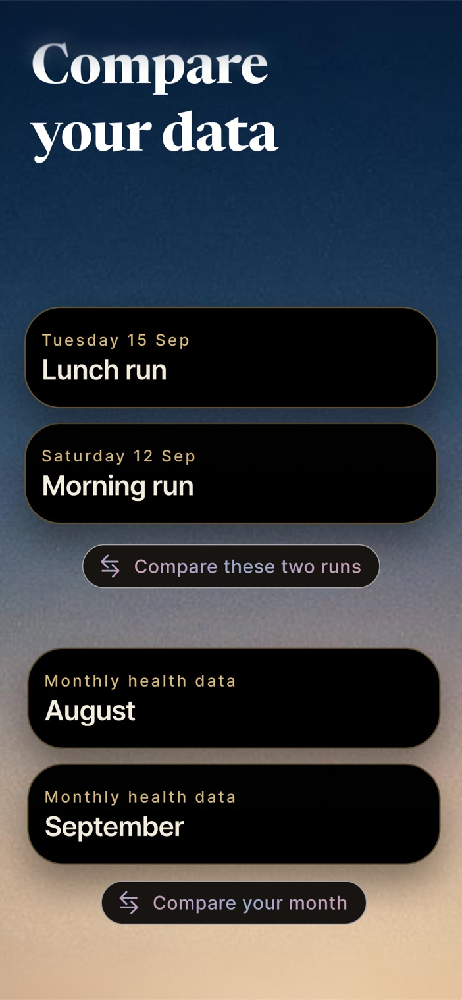
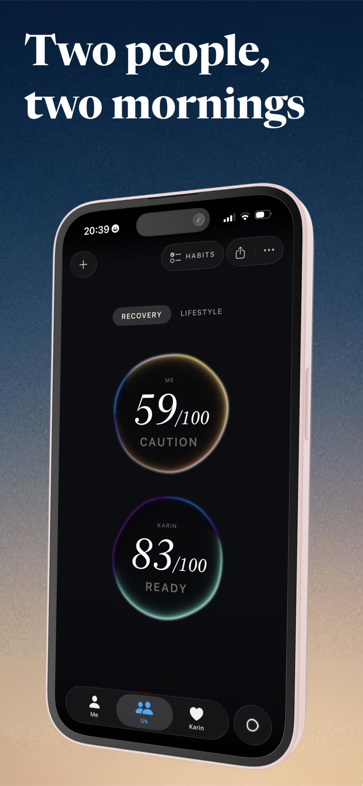
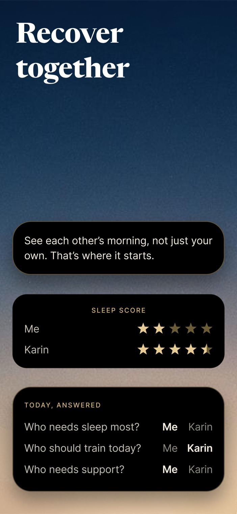
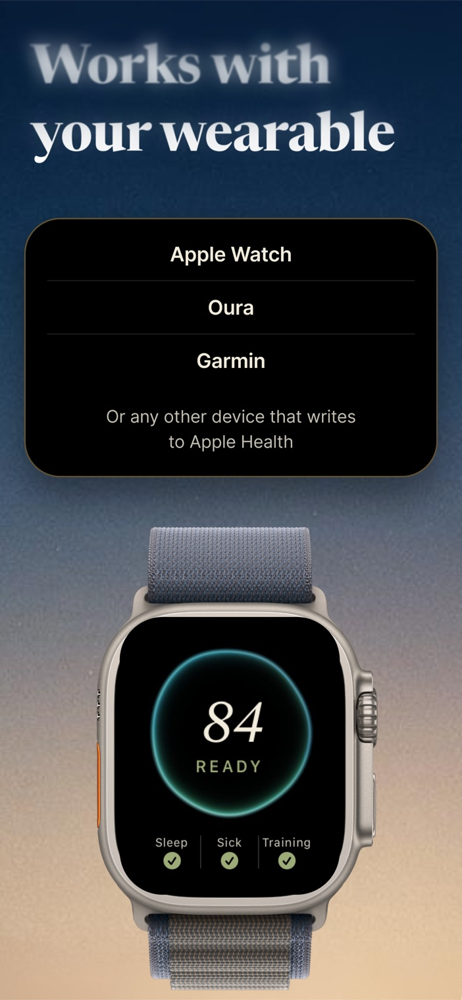
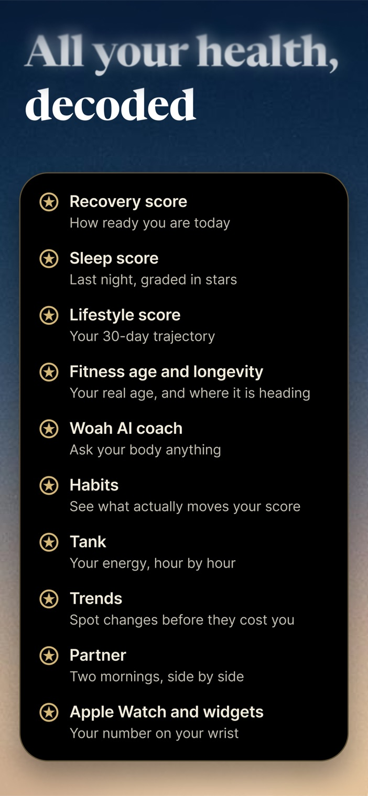
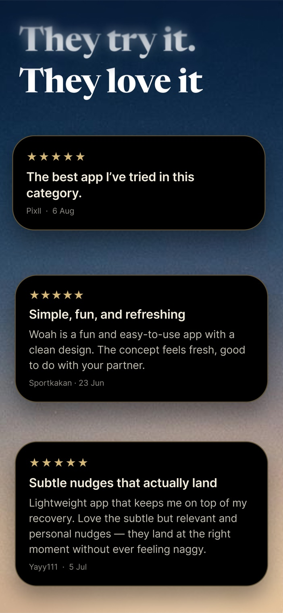

Should I train today? How well did I sleep? Am I getting sick? Seven questions, answered before you get out of bed. No charts to read first.
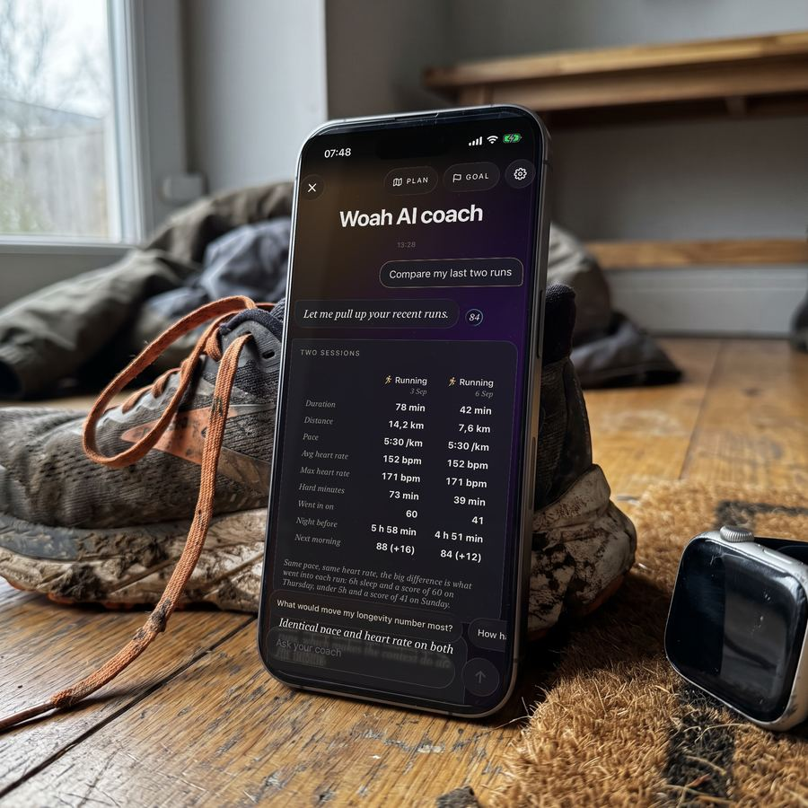
Every session, and what it cost you the next morning. Ask why a run felt hard, or line it up against your last one. The answer comes in plain words, never a load score.
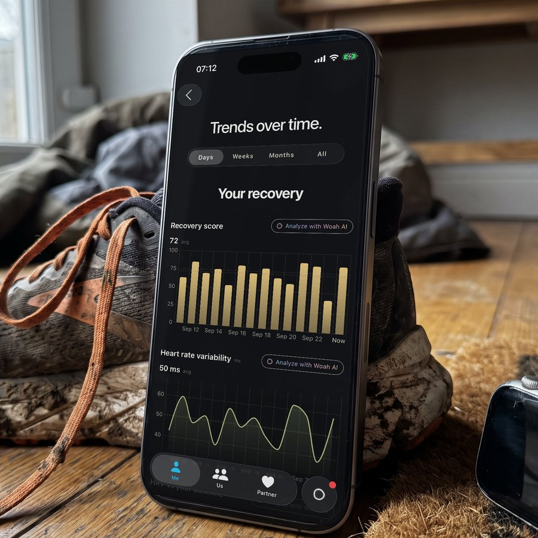
Weekdays against weekends. Your night, your heart and your habits over weeks and months. Woah shows what actually moves your score, drawn so you can see it.
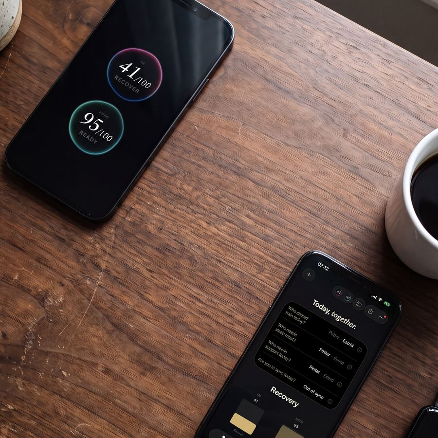
Connect with your partner and see both mornings side by side. Who needs sleep most, who should train today, who needs support. The conversation starts with the truth, not a guess.
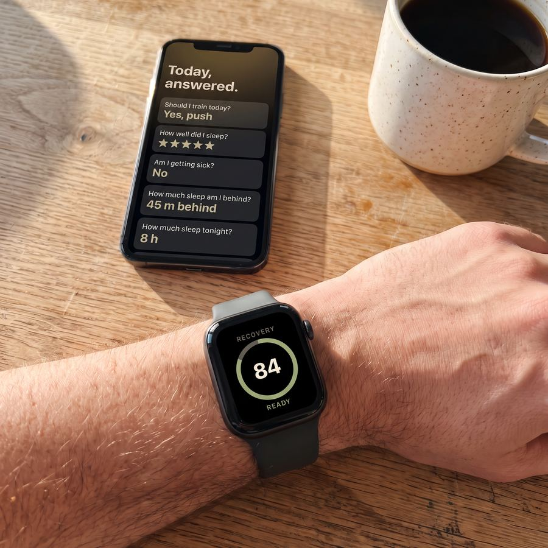
Every answer is measured against your own baseline, not a population average. What is normal for you is the only thing that counts.
Woah is an iOS app that turns the numbers from your wearable into one clear answer every morning: a recovery score from 0 to 100, and one honest message about what your body needs today. It reads your sleep, heart-rate variability, resting heart rate, breathing rate and activity from Apple Health, and does the interpretation for you.
Wearables are great at collecting data and bad at telling you what it means. You wake up to a dashboard of graphs and still don't know: should I train today or rest? Woah replaces the dashboard with a single score, a plain-language explanation of why, and concrete guidance for the day. No jargon, no guesswork.
Any device that syncs to Apple Health: Apple Watch, Garmin, Oura, Whoop, Polar, Fitbit and others. Woah reads from Apple Health, so there are no separate accounts or logins. If a night looks wrong, you can correct sleep, steps or stress manually, and if you have no wearable you can enter values by hand.
The score weighs four overnight signals: sleep is the biggest part (about half), then heart-rate variability compared with your own baseline (about a third), and smaller contributions from resting heart rate and breathing rate. On top of that, life adjusts the result: high self-reported stress, a declining HRV trend, or alcohol and nicotine the evening before can cap how high the score can go, and recent hard training is factored in.
The result lands in one of three zones: Ready (75 and up), Caution (50–74), Recover (below 50).
Because normal is personal. An HRV of 45 ms can be excellent for one person and low for another. Woah builds a rolling baseline from your own history and scores each morning against it, so the score tells you how you are doing relative to you.
A block on the main screen that answers the day's practical questions directly from your data: Can I train today? How did I sleep? How much sleep am I behind? Should I drink tonight? Am I getting sick? The answers are computed from your numbers, never invented, and each one has a short AI comment behind the info icon that adds colour without ever contradicting the facts.
A conversation with Woah itself, in its own tab. The coach sees up to a year of your data, helps you set real goals, and builds you a concrete weekly plan every Sunday evening. It checks in mid-week, remembers what you tell it, pulls up specific days on request and draws charts right in the chat. It is a wellness coach, not a doctor: it never diagnoses or gives medical advice.
You pair with your partner using a 6-character code, and each of you sees how the other slept and how ready their day is, without needing to ask, and without exposing anything you choose to keep private. The Us view adds insights about the two of you together. You control exactly what is shared, and can pause sharing at any time.
The core of Woah is free, forever: the daily recovery score, the why behind it, daily AI guidance, "Today, answered", habit logging and streaks, smart notifications and share cards. Premium is one subscription that unlocks History and trends, the Lifestyle status, the AI coach, and the full partner experience — with a free trial to start.
On your iPhone and in your own iCloud. Woah has no servers of its own and never sells data. Your settings, habits and score history sync to your private iCloud so they survive a new phone, and raw Apple Health data is never uploaded anywhere by Woah.